2.6 Some Important Continuous Probability Density Functions
In this section, we describe models frequently used in continuous random phenomena. These distributions are the building blocks of statistical inference and engineering applications.
2.6.1 The Uniform Distribution
The uniform distribution provides a probability model for selecting points at random from an \([\alpha , \beta ]\). An important application of the uniform distribution lies in random number generation.
Definition 2.6.1 (Uniform Distribution \(X \thicksim \operatorname {UNIF}(\alpha , \beta )\)). A random variable \(X\) is said to be uniform on the interval \([\alpha , \beta ]\) if its p.d.f. is of the form \[ f_X(x)= \begin {cases} \dfrac {1}{\beta -\alpha }, & \quad \alpha \leq x\leq \beta \\ 0, &\text {otherwise}\\ \end {cases} \]
Diagrams of the Uniform Distribution.
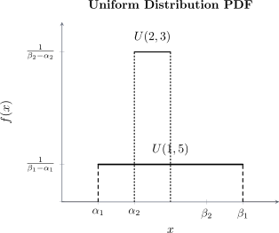
The mean of \(X\) is \begin {align*} E(X) &=\int ^{\beta }_{\alpha }x\frac {1}{\beta -\alpha }\, dx\\ &=\frac {1}{\beta -\alpha }\int ^{\beta }_{\alpha }x\, dx\\ &=\frac {\alpha ^2}{2(\beta -\alpha )}\Bigg |_{\alpha }^{\beta }\\ &=\frac {\beta ^2-\alpha ^2}{2(\beta -\alpha )}\\ &=\frac {(\beta +\alpha )(\beta -\alpha )}{2(\beta -\alpha )}\\ & =\frac {\beta +\alpha }{2}. \end {align*}
Also \begin {align*} E(X^2) & = \frac {1}{\beta - \alpha }\int ^{\beta }_{\alpha } x^2\,dx\\ & = \frac {1}{\beta - \alpha }\left [\frac {x^3}{3}\right ]^{\beta }_{\alpha }\\ & = \frac {1}{\beta -\alpha }\, \frac {\beta ^3-\alpha ^3}{3}\\ & = \frac {(\beta - \alpha )(\beta ^2 + \beta \alpha + \alpha ^2)}{3(\beta - \alpha )}\\ & = \frac {\beta ^2 + \beta \alpha + \alpha ^2}{3}. \end {align*}
Hence, variance is \begin {align*} \operatorname {Var}(X) & = \frac {\beta ^2 + \beta \alpha + \alpha ^2}{3}- \frac {(\beta + \alpha )^2}{4}\\ & = \frac {\beta ^2 - 2\beta \alpha + \alpha ^2}{12}\\ & = \frac {(\beta - \alpha )^2}{12}. \end {align*}
The m.g.f of \(X\) is \begin {align*} M_X(t) &=E\left (e^{tx}\right )\\ &=\int ^{\beta }_{\alpha }e^{tx}\, dx\\ &=\frac {1}{\beta -\alpha }\int ^{\beta }_{\alpha }e^{tx}\, dx\\ & =\frac {1}{\beta -\alpha }\,\frac {e^{tx}}{t}\Bigg |_{\alpha }^{\beta }\\ &=\frac {e^{\beta t}-e^{\alpha t}}{t(\beta -\alpha )}. \end {align*}
Thus \[M_X(t)= \begin {cases} \frac {e^{\beta t}-e^{\alpha t}}{t(\beta -\alpha )}\, , & \text {if}\,\, t \neq 0\\ 1, & \text {if}\,\, t = 0.\\ \end {cases}.\]
Remark 2.6.2. Foundation of Simulation: In computer science and computational statistics, the “Random” function in almost all programming languages generates a \(U(0, 1)\) value. Other distributions (like Normal or Exponential) are then generated by transforming these uniform values using the Inverse Transform Method.
2.6.2 Exponential Distribution
The exponential is the distribution of the amount of time until some specific event occurs (i.e. waiting time). For instance, how long one waits before a new component “dies”?
Definition 2.6.3. A continuous random variable \(X\) whose p.d.f is given, for some \(\lambda > 0\), by \[ f_X(x)= \begin {cases} \lambda e^{-\lambda x}, & x >0,\quad \lambda >0\\ 0, &\text {otherwise}\\ \end {cases} \] is said to be an exponential random variable.
Remark 2.6.4. An exponential has the mean and variable \[E(X)=\frac {1}{\lambda },\quad \operatorname {Var}(X)=\frac {1}{\lambda ^2}.\]
Note 2.6.5. The p.d.f of an exponential random variable can also be presented in this form \[ f_X(x)= \begin {cases} \frac {1}{\lambda }e^{-\frac {x}{\lambda }}, & x>0,\quad \lambda >0\\ 0, &\text {otherwise} \end {cases} \] where the mean and variance are \[E(X)=\lambda , \quad \operatorname {Var}(X)=\lambda ^2.\]
Graphs of an Exponential
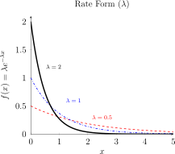
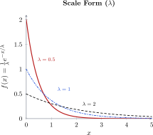
- Rate Parameterization \((\lambda )\): Used most commonly in Poisson processes. Here, \(E(X) = \frac {1}{\lambda }\). As \(\lambda \) increases, the mean decreases, and the curve becomes steep.
- Scale Parameterization \((\theta \) or \(\lambda )\): Often used in engineering and reliability (Mean time to failure). Here, \(E(X) = \lambda \). As \(\lambda \) increases, the mean increases, the curve spreads out further along the \(x\)-axis.
The cumulative distribution function is \begin {align*} F_X(x) & = P[X \leq x]\\ & = \int ^x_0 \lambda \, e^{-\lambda x}\, dx\\ & = -e^{-\lambda x}\Big |^x_0\\ & = 1 - e^{-\lambda x}\, , \quad x \geq 0. \end {align*}
The moment generating function is \begin {align*} M_X(t) & = E\left [e^{tX}\right ]\\ & = \int ^{\infty }_0 e^{tx}\, \lambda e^{-\lambda x}\, dx\\ & = \lambda \int ^{\infty }_0 e^{-(\lambda - t)x}\, dx\\ & = \frac {\lambda }{\lambda - t}\,, \quad t < \lambda . \end {align*}
Then differentiating \(M'_X(t)\) we get \[M'_X(t) = \frac {\lambda (-1) (-1)}{(\lambda - t)^2} = \frac {\lambda }{(\lambda - t})^2\] \[M''_X(t) = \frac {\lambda (-1)(-2)}{(\lambda - t)^3} = \frac {2\lambda }{(\lambda - t)^3}\] Then the mean is \[E(X) = M'_X(0) = \frac {\lambda }{\lambda ^2} = \frac {1}{\lambda }\] and \[E(X^2) = M''_X(0) = \frac {2\lambda }{\lambda ^3} = \frac {2}{\lambda ^2}\] then variance \[\operatorname {Var}(X) = \frac {2}{\lambda ^2}-\left (\frac {1}{\lambda ^2}\right ) = \frac {1}{\lambda ^2}.\]
Example 2.6.7. A manufacture of microwave ovens is trying to determine the length of warranty period it should attach to its magneto tube, the most critical component in the microwave oven. Preliminary testing has shown that the life of the tube has an exponential distribution with mean 6.25 years.
-
What is the warranty period if the manufacturer wants to replace only \(10\%\) of the magneto tube.
Solution. Let the warranty period be \(\alpha \). \(X\thicksim \) Exp\((\lambda )\), \(E(X)=6.25\) \[f_X(x)=\frac {1}{6.25}e^{-\frac {x}{6.25}}\] \(P(X\leq \alpha )=0.1\) \begin {align*} \int ^{\alpha }_0\frac {1}{6.25}e^{-\frac {x}{6.25}}dx=0.1\\ -e^{-\frac {x}{6.25}}\Bigg |_0^{\alpha } &=0.1\\ 1-e^{-\frac {\alpha }{6.25}}=0.1\\ e^{-\frac {\alpha }{6.25}} &=0.90\hspace {0.5cm} \implies \frac {-\alpha }{6.25}=\ln (0.90)\\ \alpha &=-6.25 \ln (0.90). \end {align*}
Therefore, \(\alpha =0.6585\) years \(\approx 7.9\) months \(\approx 8.0\) months. □
-
If the warranty is 4 years, what percentage of the tubes will be replaced?
Solution. \begin {align*} P(X\leq 4) &=\int ^4_0\frac {1}{6.25}e^{-\frac {x}{6.25}}dx\\ & =-e^{-\frac {x}{6.25}}\Big |_0^4\\ & = 1-e^{-\frac {4}{6.25}}\\ & = 0.4727 = 47.27\% \end {align*} □
2.6.3 Gamma Distribution
Definition 2.6.8 (Gamma Function). The gamma function, denoted by \(\Gamma (\alpha )\) for all \(\alpha > 0\), is given by \[\Gamma (\alpha ) = \int _0^{\infty } t^{\alpha - 1}\, e^{-t}\, dt.\]
Properties of \(\Gamma \)
- \(\Gamma (\alpha + 1) = \alpha \,\Gamma (\alpha )\)
- \(\Gamma (n) = (n-1)!, \, n = 1, 2, \cdots \)
- \(\Gamma \left (\frac {1}{2}\right ) = \sqrt {\pi }\)
Definition 2.6.9 (Gamma Distribution \(X\thicksim \operatorname {GAM}(\alpha , \lambda )\)). A gamma random variable \(X\) with parameters \(\alpha > 0, \, \lambda > 0\), has probability density function \[f_X(x) =\frac {x^{\alpha -1}e^{-\frac {x}{\lambda }}}{\lambda ^{\alpha }\Gamma (\alpha )}\quad \text {or}\quad f_X(x) =\frac {\lambda ^{\alpha }x^{\alpha -1}e^{-\lambda x}}{\Gamma (\alpha )}\, , \quad \quad x>0\]
Note 2.6.10. When \(\alpha = 1\), then the gamma reduces to the exponential distribution. \[f_X(x) = \frac {x^{1-1}e^{-\frac {x}{\lambda }}}{\lambda ^1 \Gamma (1)}=\frac {1}{\lambda }e^{-\frac {x}{\lambda }},\quad x>0,\quad \lambda >0\] \[f_X(x) = \frac {\lambda ^1x^{1-1}e^{-\lambda x}}{\Gamma (1)}=\lambda e^{-\lambda x},\quad x>0,\quad \lambda >0\]
The moment generating function of \(X\) is \begin {align*} M_X(t) &=E\left [e^{tx}\right ] =\int ^{\infty }_{0} e^{tx}\,\frac {\lambda ^{\alpha }\, x^{\alpha - 1}\, e^{-\alpha \lambda }}{\Gamma (\alpha )}\, dx\\ & = \frac {\alpha ^{\lambda }}{\Gamma (\alpha )}\int ^{\infty }_0x^{\alpha - 1}\, e^{-(\lambda - t)x}\, dx\\ & =\frac {\lambda ^{\alpha }}{\Gamma (\alpha )}\int ^{\infty }_0\left (\frac {y}{\lambda -t}\right )^{\alpha -1}e^{-y}\, \frac {dy}{\lambda -t},\quad \quad \quad \text {letting}\quad y = (\lambda - t)x\\ &=\frac {\lambda ^{\alpha }}{\Gamma (\alpha )}\frac {1}{(\lambda -t)^{\alpha -1}}\,\frac {1}{(\lambda - t)}\int ^{\infty }_{0}y^{\alpha -1}\, e^{-y}\, dy\\ &=\frac {\lambda ^{\alpha }}{\Gamma (\alpha )}\quad \left (\frac {1}{\lambda -t}\right )^{\alpha }\quad \Gamma (\alpha )\\ &=\left (\frac {\lambda }{\lambda -t}\right )^{\alpha }. \end {align*}
Differentiating \(M_X(t)\) \begin {align*} M'_X(t) & = \lambda ^{\alpha }(-\alpha )(\lambda -t)^{-\alpha -1}(-1) = \alpha \lambda ^{\alpha }(\lambda -t)^{-\alpha -1} = \frac {\alpha \, \lambda ^{\alpha }}{(\lambda - t)^{\alpha + 1}}\\ M''_X(t) & = \frac {\alpha \, [-(\alpha + 1)](-1)\,\lambda ^{\alpha }}{(\lambda - t)^{\alpha + 2}}=\frac {\alpha (\alpha + 1) \lambda ^{\alpha }}{(\lambda - t)^{\alpha + 2}} \end {align*}
Then the mean is \[E(X) = M'_X(0) = \frac {\alpha \, \lambda ^{\alpha }}{\lambda ^{\alpha + 1}}= \frac {\alpha }{\lambda }\] and for the variance \[E(X^2) = M''_X(0) = \frac {\alpha (\alpha + 1) \, \lambda ^{\alpha }}{\lambda ^{\alpha + 2}} = \frac {\alpha (\alpha + 1)}{\lambda ^{2}}\] therefore \[\operatorname {Var}(X) = \frac {\alpha ^2 + \alpha }{\lambda ^2} - \left (\frac {\alpha }{\lambda }\right )= \frac {\alpha }{\lambda ^2}.\]
- We can present the m.g.f of the gamma as \[M_X(t)=\left (\frac {\lambda }{\lambda -t}\right )^{\alpha }=\left (\frac {1}{1-t/\lambda }\right )^{\alpha }=\left (1-\frac {t}{\lambda }\right )^{-\alpha }.\]
- The “Shape” parameter (\(\alpha \)) dictates the physical appearance of the curve (as seen in plots below), while the “Rate” parameter (\(\lambda \)) determines the scale or “spread” of the data along the \(x\)-axis.
- While the Exponential distribution models the time until the first event occurs in a Poisson process, the Gamma distribution models the time required for \(\alpha \) independent events to occur.
- The gamma is a sum of independent exponentials. Exponential is \(X\thicksim \operatorname {GAM}(1,\lambda ).\)
Example 2.6.12. The lifetime of a battery is exponentially distributed with rate \(\lambda \). If a stereo cassette requires one battery to operate, then the total playing time one can obtain from the total of \(n\) batteries is a gamma random variable with parameters \((n,\lambda )\).
Graphs of the Gamma
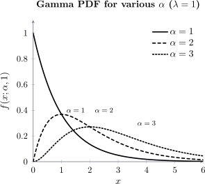
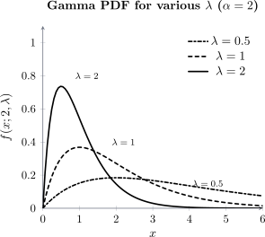
2.6.4 Beta Distribution
Definition 2.6.13 (Beta Function.). We define the Beta function of \(\alpha \) and \(\beta \), by \[B(\alpha ,\beta ) = \int ^1_0t^{\alpha -1}\,(1 - t)^{\beta - 1}\, dt\] for \(\alpha > 0\) and \(\beta > 0\).
Properties of \(B\):
- \(B(\alpha , \beta ) = \frac {\Gamma (\alpha )\, \Gamma (\beta )}{\Gamma (\alpha + \beta )}\)
- \(B(\alpha , \beta ) = B(\beta , \alpha )\)
- \(B(\alpha + 1, \beta ) = \frac {\alpha }{\alpha + \beta }\, B(\alpha , \beta )\)
- \(B(\alpha , \beta + 1) = \frac {\beta }{\alpha + \beta }\, B(\alpha ,\beta )\)
Definition 2.6.14 (Beta Distribution \(X\thicksim \operatorname {Beta}(\alpha ,\beta )\)). A random variable is said to have a beta distribution if its density p.d.f is given by \[f_X(x)=\frac {x^{\alpha -1}(1-x)^{\beta -1}}{B(\alpha ,\beta )}\, , \quad \quad \alpha >0, \quad \beta >0, \quad 0<x<1.\]
The \(k^{\text {th}}\) expectation of \(X\) is \begin {align*} E(x^k) & = \int \limits _x x^kf_X(x)\,dx\\ & =\int ^1_0\frac {x^k\, x^{\alpha -1}\, (1-x)^{\beta -1}}{B(\alpha ,\beta )}\,dx\\ & = \frac {1}{B(\alpha ,\beta )}\int ^1_0x^{k+\alpha -1}(1-x)^{\beta -1}\,dx\\ & = \frac {1}{B(\alpha ,\beta )}B(k+\alpha ,\beta )\\ & = \frac {\dfrac {\Gamma (k+\alpha )\Gamma (\beta )}{\Gamma (k+\alpha +\beta )}}{\dfrac {\Gamma (\alpha )\Gamma (\beta )}{\Gamma (\alpha +\beta )}} =\frac {\Gamma (k+\alpha )\Gamma (\beta )}{\Gamma (k+\alpha +\beta )}\times \frac {\Gamma (\alpha +\beta )}{\Gamma (\alpha )\Gamma (\beta )}\\ & = \frac {\Gamma (k+\alpha )\Gamma (\alpha +\beta )}{\Gamma (\alpha )\Gamma (k+\alpha +\beta )}. \end {align*}
When \(k = 1\), we get the mean of \(X\) \[E(x)=\frac {\Gamma (\alpha +1)\Gamma (\alpha +\beta )}{\Gamma (\alpha )\Gamma (\alpha +\beta +1)}=\frac {\alpha \Gamma (\alpha )\Gamma (\alpha +\beta )}{\Gamma (\alpha )(\alpha +\beta )\Gamma (\alpha +\beta )}=\frac {\alpha }{\alpha +\beta }.\]
When \(k = 2\), we get \begin {align*} E(x^2) & = \frac {\Gamma (\alpha +2)\Gamma (\alpha +\beta )}{\Gamma (\alpha )\Gamma (\alpha +\beta +2)}\\ & = \frac {(\alpha +1)\alpha \Gamma (\alpha )\Gamma (\alpha +\beta )}{\Gamma (\alpha )(\alpha +\beta +1)(\alpha +\beta )\Gamma (\alpha +\beta )}\\ & = \frac {\alpha (\alpha +1)}{(\alpha +\beta +1)(\alpha +\beta )}. \end {align*}
Therefore, the variance of \(X\) is \begin {align*} \operatorname {Var}(x) & = E(x^2)-(E(x))^2\\ &=\frac {\alpha (\alpha +1)}{(\alpha +\beta )(\alpha +\beta +1)}-\left (\frac {\alpha }{\alpha +\beta }\right )^2\\ & = \frac {\alpha }{\alpha +\beta }\left [\frac {\alpha +1}{\alpha +\beta +1}-\frac {\alpha }{\alpha +\beta }\right ]\\ & = \frac {\alpha }{\alpha +\beta }\left [\frac {(\alpha +1)(\alpha +\beta )-\alpha (\alpha +\beta +1)}{(\alpha +\beta )(\alpha +\beta +1)}\right ]\\ & = \frac {\alpha }{(\alpha +\beta )^2}\left [\frac {\alpha ^2+\alpha \beta +\alpha +\beta -\alpha ^2-\alpha \beta -\alpha }{\alpha +\beta +1}\right ]\\ & = \frac {\alpha \beta }{(\alpha +\beta )^2(\alpha +\beta +1)}. \end {align*}
Graph of the Beta Distribution.
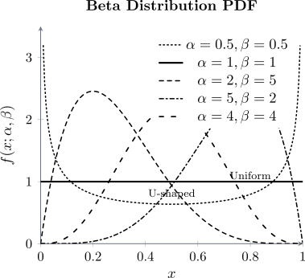
Remark 2.6.15. The Beta distribution is famously known as the “Probability of a Probability.” In Bayesian statistics, it is used as the conjugate prior for the Bernoulli and Binomial distributions. For example, if you are trying to estimate the probability of success of a new crop variety in a specific Zambian province, the Beta distribution represents your “certainty” about that probability.
2.6.5 Normal Distribution
The main importance of normal distribution lies on the central limit theorem which says that the sample mean has a normal distribution if the sample size is large.
Definition 2.6.16 (Normal Distribution \(X\thicksim N(\mu ,\sigma ^2)\)). A random variable \(X\) is said to normally distributed, with parameter \(\mu \) and \(\sigma ^2\) if the density of \(X\) is given by \[f_X(x)=\frac {1}{\sqrt {2\pi \sigma ^2}}\, e^{-\frac {1}{2\sigma ^2}(x-\mu )^2}\, ,\quad x\ \in (-\infty ,\infty ).\]
This density function is a bell-shaped curve that is symmetric about \(\mu \). However, the special normal distribution is the standard normal distribution denoted by \[Z\thicksim N(0,1)\implies \mu =0,\quad \sigma ^2=1.\]
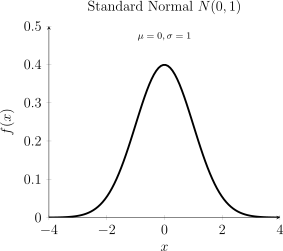
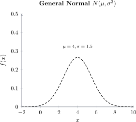
Theorem 2.6.17. If \(X \thicksim N(\mu ,\sigma ^2)\), then \begin {align*} E(X) & = \mu \\ \operatorname {Var}(X) & = \sigma ^2\\ M_X(t) & = e^{\mu t + \frac {1}{2}\sigma ^2 t^2}. \end {align*}
The moment generating function \begin {align*} M_X(t) & = E(e^{tx})\\ & =\int _X e^{tx}f_X(x)\, dx\\ & = \int ^{\infty }_{-\infty } e^{tx}\, \frac {1}{\sigma \sqrt {2\pi }}\, e^{-\frac {1}{2}\left (\frac {x-\mu }{\sigma }\right )^2}\, dx\\ & = \int ^{\infty }_{-\infty } e^{tx}\, \frac {1}{\sigma \sqrt {2\pi }}\, e^{-\frac {1}{2\sigma ^2}\left (x^2 - 2\mu x + \mu ^2\right )}\, dx\\ & = \int ^{\infty }_{-\infty }\frac {1}{\sigma \sqrt {2\pi }}e^{-\frac {1}{2\sigma ^2}\left (x^2 - 2\mu x + \mu ^2 - 2\sigma ^2 tx\right )}\, dx\\ & = \int ^{\infty }_{-\infty }\frac {1}{\sigma \sqrt {2\pi }}\, e^{-\frac {1}{2\sigma ^2}\left (x - \mu - \sigma ^2t\right )^2}\, e^{\mu t + \frac {1}{2}\sigma ^2 t^2}\, dx\\ & = e^{\mu t + \frac {1}{2}\sigma ^2 t^2} \int ^{\infty }_{-\infty }\frac {1}{\sigma \sqrt {2\pi }}\, e^{-\frac {1}{2\sigma ^2}\left (x - \mu - \sigma ^2t\right )^2}\, \, dx\\ & = e^{\mu t + \frac {1}{2}\sigma ^2 t^2}. \end {align*}
Note: The last integral integrates to 1 because the integrand is the p.d.f of a normal, i.e. \(N(\mu + \sigma ^2 t, \sigma ^2)\).
Differentiating the moment generating function
\[M_X'(t)=(\mu +t\sigma ^2) e^{\mu t+\frac {1}{2}t^2\sigma ^2}\] \[M''_X(t) = \sigma ^2e^{\mu t+\frac {1}{2}t^2\sigma ^2}+(\mu +t\sigma ^2)(\mu +t\sigma ^2)e^{\mu t +\frac {1}{2}t^2\sigma ^2}\] Then the mean is \[E(x)=M'_X(0)=\mu e^0=\mu \] and \[E(X^2)= M''_X(0) =\sigma ^2e^{0+0}+(\mu +0)(\mu +0)e^{0+0}=\sigma ^2+\mu ^2\] hence, the variance \[\operatorname {Var}(X)=E[x^2]-[E(x)]^2=\sigma ^2+\mu ^2-\mu ^2=\sigma ^2.\]
2.6.6 Cauchy Distribution
In physics, the Cauchy distribution is known as the Lorentz distribution. It is used to model the distribution of energy of unstable states in quantum mechanics and the resonance curves in spectroscopy.
Definition 2.6.18 (Cauchy Distribution \((X\thicksim \operatorname {Cauchy}(a,\alpha )\)). A random variable is said to have a Cauchy distribution with parameters \(a\) and \(\alpha \), if the p.d.f is give by\[f_X(x) = \frac {1}{\alpha \pi \left [1 + \left (\frac {x - a}{\alpha }\right )^2\right ]}\, , \quad -\infty < x < \infty \] for \(\alpha > 0\) and \(-\infty < a < \infty \).
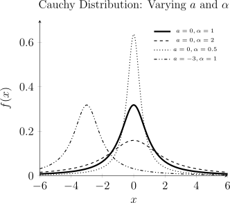
Remark 2.6.19. The mean does not exist \[E(x)=\int ^{\infty }_{-\infty }\dfrac {x}{\pi (1+(x-\theta )^2)}\, dx=H(x)\Bigg |_{-\infty }^{\infty }\quad \quad \text {diverges}\] and \[E(x^2)=\int ^{\infty }_{-\infty }\dfrac {x^2}{\pi (1+(x-\theta )^2)}\, dx\quad \quad \text {diverges}.\]
Exercise 2.6.20. Suppose that X has Cauchy \(X\thicksim \operatorname {Cauchy}(1,0)\) distribution show that \(E(X)\) does not exists.
2.6.7 The Weibull Distribution
The distribution is used in reliability and survival analysis to model the lifetime of an object, the lifetime of an organism or systems that fail at a constant rate, or systems that wear out as they age.
Definition 2.6.21 (Weibull Distribution \((X\thicksim \operatorname {Weibull}(\alpha , \beta )\)). A Weibull random variable \(X\) has p.d.f of form \[f_X(x) = \frac {\beta }{\alpha }\, x^{\beta - 1}\, e^{\left (-\frac {1}{\alpha }\right )x^{\beta }}\,, \quad \quad x> 0,\] with the scale parameter \(\alpha > 0\) and shape parameter \(\beta > 0\).
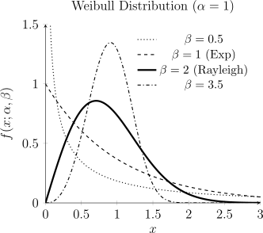
Theorem 2.6.22. If \(X \thicksim \operatorname {Weibull}(\alpha ,\beta )\), then c.d.f is \[F_X(x) = P(X \leq x) = 1 - e^{-\frac {1}{\alpha }\, \beta ^x}\, ,\] the mean is \[E(X) = \frac {\alpha }{\beta }\,\Gamma \left (\frac {1}{\beta }\right )\] and the variance is \[\operatorname {Var}(X) = \alpha ^2\left \{\frac {2}{\beta }\Gamma \left (\frac {2}{\beta }\right ) - \left [\frac {1}{\beta }\, \Gamma \left (\frac {1}{\beta }\right )\right ]^2\right \}.\]
2.6.8 Rayleigh Distribution
The Rayleigh distribution is a special case of the Weibull distribution (where the shape parameter is fixed), the only thing that changes here is the scale parameter \(\alpha \).
Definition 2.6.23 (Rayleigh Distribution \((X\thicksim \operatorname {Rayleigh(\alpha )}\)). A Rayleigh random variable \(X\) with \(\alpha > 0\) has p.d.f \[f_X(x) = \frac {2x\, e^{-\frac {x^2}{\alpha }}}{\alpha }\, , \quad \quad x > 0.\]
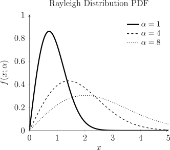
Exercise 2.6.24. Show that the mean of \(X \thicksim \operatorname {Rayleigh}(\alpha )\) is \[E(X) = \frac {\sqrt {\alpha \pi }}{\pi }\] and Variance is \[\operatorname {Var}(X) = \frac {\alpha (4 - \pi )}{4}.\]
2.6.9 The Pareto Distribution
The Pareto distribution is a “power-law” distribution traditionally used to model the distribution of wealth and income. In this model, the parameter \(\lambda \) represents the minimum value (such as a minimum wage), while \(\kappa \) determines the shape of the distribution. Beyond economics, it is used to model the lifetime of objects with a mandatory warranty period \(\lambda \), or the duration of events with a guaranteed minimum length \(\lambda \), such as a labor strike.
Definition 2.6.25 (Pareto Distribution \(X\thicksim \operatorname {Pareto}(\lambda , \kappa )\)). A Pareto random variable \(X\) with scale parameter \(\lambda > 0\) and shape parameter \(\kappa > 0\) has a p.d.f. given by: \[f\_X(x) = \frac {\kappa \lambda ^{\kappa }}{x^{\kappa + 1}}, , \quad \quad x \geq \lambda .\]
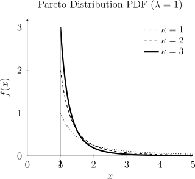
Theorem 2.6.26. If \(X\thicksim \operatorname {Pareto}(\alpha )\), then
the moment generating function is \[M_X(t) = \kappa (-\lambda t)^{\kappa }\Gamma (-\kappa ,\lambda t),\] the mean is \[E(X) = \frac {\kappa \lambda }{\kappa - 1}\,\,\, \text {for}\quad \kappa > 1,\] and the variance is \[\operatorname {Var}(X) = \frac {\kappa \lambda ^2}{(\kappa - 1)^2(\kappa - 2)}\,\,\, \text {for}\quad \kappa > 2.\]
- The Pareto distribution is the mathematical backbone of the 80/20 rule (the Pareto Principle). For example, it often models how \(80\%\) of a country’s wealth is held by \(20\%\) of the population.
- Unlike the Normal or Gamma distributions, which can approach zero, the Pareto has a hard “floor” at \(\lambda \). In many engineering applications, this represents the “guaranteed” life of a component before any failure is even possible.
2.6.10 Practice problems
Problem 2.6.1. [Tutorial Sheet 4] You arrive at a bus stop at 10:00, knowing that the bus will arrive at some time uniformly distributed between 10:00 and 10:30. What is the probability that you will wait
- longer than 10 minutes;
- an additional 10 or more minutes, if at 10:15 the bus has not yet arrived?
Show solution
Solution. Let \(T\) be the arrival time in minutes after 10:00, so \(T\sim U(0,30)\) and for \(0\leq t\leq 30\), \(P(T>t) = \dfrac {30-t}{30}\).
(a). \[P(T>10) = \frac {30-10}{30} = \frac {20}{30} = \frac {2}{3}.\]
(b). Waiting 10 more minutes from 10:15 means \(T\geq 25\), given \(T>15\): \[P(T\geq 25 \mid T>15) = \frac {P(T\geq 25)}{P(T>15)} = \frac {5/30}{15/30} = \frac {5}{15} = \frac {1}{3}.\] Note that this is smaller than the answer to (a). The uniform distribution is not memoryless: having waited already, the remaining wait is bounded by the 30-minute window, so a further 10 minutes becomes less likely, not equally likely. The exponential is the distribution that behaves otherwise, as the next question shows.
Problem 2.6.2. [Tutorial Sheet 4] Buses arrive at a bus stop at 15-minute intervals starting at 7 a.m.; that is, they arrive at 7:00, 7:15, 7:30, 7:45 and so on. If a passenger arrives at the bus stop at a time uniformly distributed between 7:00 and 7:30, find the probability that he waits
- less than 5 minutes for a bus;
- more than 10 minutes for a bus.
Show solution
Solution. Let \(T\sim U(0,30)\) be the passenger’s arrival time in minutes after 7:00. Buses leave at \(0\), \(15\) and \(30\), so the wait is \[W = \begin {cases} 15-T & 0\leq T<15\\ 30-T & 15\leq T<30.\end {cases}\] The wait resets at \(T=15\), so each half of the window has to be looked at separately.
(a). \(W<5\) requires \(15-T<5\) (i.e. \(T>10\)) in the first half, or \(30-T<5\) (i.e. \(T>25\)) in the second. That is \(T\in (10,15)\cup (25,30)\), of total length \(5+5 = 10\): \[P(W<5) = \frac {10}{30} = \frac {1}{3}.\]
(b). \(W>10\) requires \(T<5\) in the first half or \(T<20\) in the second, that is \(T\in [0,5)\cup [15,20)\), again of total length 10: \[P(W>10) = \frac {10}{30} = \frac {1}{3}.\]
Problem 2.6.3. [Tutorial Sheet 4] The time in hours a transistor lasts follows an exponential distribution with a mean of 100. Find the probability that a transistor lasts longer than
- 15 hours;
- 110 hours;
- 110 hours given that it lasts longer than 95 hours.
Show solution
Solution. For an exponential with mean \(\mu = 100\), the rate is \(\lambda = \tfrac {1}{100}\) and the survival function is \(P(X>x) = e^{-x/100}\).
(a). \(P(X>15) = e^{-0.15} \approx 0.8607\).
(b). \(P(X>110) = e^{-1.1} \approx 0.3329\).
(c). \[P(X>110\mid X>95) = \frac {P(X>110)}{P(X>95)} = \frac {e^{-1.10}}{e^{-0.95}} = e^{-0.15} \approx 0.8607.\] This is exactly the answer to (a), and not by coincidence: the exponential is memoryless. A transistor that has already survived 95 hours is no more likely to fail in the next 15 hours than a brand new one – the component does not age. Contrast the uniform bus in the previous question but one, where waiting made the further wait less likely.
Problem 2.6.4. [Tutorial Sheet 4] Rainfall in Solwezi follows an exponential distribution with mean 15 mm per day. Find the probability that
- the rainfall will exceed 17 mm on a given day;
- in four out of the next 5 days the rainfall will be less than the mean.
Show solution
Solution. (a). With mean 15, \(P(X>x) = e^{-x/15}\), so \[P(X>17) = e^{-17/15} \approx 0.3220.\]
(b). First, the probability that a single day is below the mean: \[P(X<15) = 1-e^{-15/15} = 1-e^{-1} \approx 0.6321.\] Notice this is not \(\tfrac 12\). The exponential is skewed, so the mean sits above the median – about 63% of days fall below the average rainfall, and a few very wet days pull the mean up.
The five days are independent, each below the mean with probability \(p = 1-e^{-1}\), so the number of such days is binomial: \[P(\text {exactly }4) = \binom {5}{4}p^{4}(1-p) \approx 5(0.6321)^{4}(0.3679) \approx 0.2937.\]
Problem 2.6.5. [Tutorial Sheet 4] Given that the probability density function of a random variable \(X\) is \[f(x) = \frac {x^{\alpha -1}e^{-x/\beta }}{\beta ^{\alpha }\Gamma (\alpha )},\qquad x>0,\] find (a) \(E(X)\), (b) \(E(X^{k})\), (c) \(\operatorname {Var}(X)\).
Show solution
Solution. It is quickest to do (b) first and read the others off it. The key is that a gamma density integrates to 1 for any valid shape and scale, so \[\int _0^{\infty }x^{c-1}e^{-x/\beta }\,dx = \beta ^{c}\,\Gamma (c).\]
(b). \[E(X^{k}) = \frac {1}{\beta ^{\alpha }\Gamma (\alpha )}\int _0^{\infty } x^{\alpha +k-1}e^{-x/\beta }\,dx = \frac {\beta ^{\alpha +k}\Gamma (\alpha +k)}{\beta ^{\alpha }\Gamma (\alpha )} = \beta ^{k}\,\frac {\Gamma (\alpha +k)}{\Gamma (\alpha )}.\]
(a). Put \(k=1\) and use \(\Gamma (\alpha +1) = \alpha \Gamma (\alpha )\): \[E(X) = \beta \,\frac {\Gamma (\alpha +1)}{\Gamma (\alpha )} = \alpha \beta .\]
(c). Put \(k=2\), using \(\Gamma (\alpha +2) = (\alpha +1)\alpha \Gamma (\alpha )\): \[E(X^{2}) = \beta ^{2}\alpha (\alpha +1) \implies \operatorname {Var}(X) = \alpha (\alpha +1)\beta ^{2}-(\alpha \beta )^{2} = \alpha \beta ^{2}.\]
Problem 2.6.6. [Tutorial Sheet 4] A die is biased so that the probability of obtaining a six is \(\frac {1}{4}\). If the die is thrown 200 times, find the approximate probability of obtaining a six
- more than 60 times;
- less than 45 times;
- between 40 and 55 times (inclusive).
Show solution
Solution. Let \(X\) be the number of sixes, so \(X\sim B\left (200,\tfrac 14\right )\) with \[\mu = np = 50, \qquad \sigma ^{2} = npq = 200\left (\tfrac 14\right )\left (\tfrac 34\right ) = 37.5, \qquad \sigma \approx 6.124.\] Since \(np\) and \(nq\) are both comfortably above 5, the normal approximation applies. The word “approximate” in the question is the signal to use it.
Because a discrete count is being approximated by a continuous curve, apply the continuity correction: replace each integer boundary by the half-way point.
(a). “More than 60” means \(X\geq 61\), so use \(60.5\): \[P(X>60) \approx P\left (Z>\frac {60.5-50}{6.124}\right ) = P(Z>1.71) \approx 0.0432.\]
(b). “Less than 45” means \(X\leq 44\), so use \(44.5\): \[P(X<45) \approx P\left (Z<\frac {44.5-50}{6.124}\right ) = P(Z<-0.90) \approx 0.1846.\]
(c). “Between 40 and 55 inclusive” spans \(39.5\) to \(55.5\): \[P(40\leq X\leq 55) \approx P\left (\frac {39.5-50}{6.124}<Z<\frac {55.5-50}{6.124}\right ) = P(-1.71<Z<0.90) \approx 0.7722.\] The exact binomial values are \(0.0454\), \(0.1852\) and \(0.7757\), so the approximation is good to about two decimal places. The correction earns its keep: without it, part (a) would give \(0.0512\) against the true \(0.0454\) – an error more than twice as large as the \(0.0432\) obtained with it.
Problem 2.6.7. [Assignment] The length of time \(x\) it takes to produce a human reaction to tear gas has an exponential distribution with a mean of 3 minutes.
- What proportion of people will be affected within 5 minutes?
- If tear gas is fired into a house to subdue a terrorist, how long should you wait so that the probability is \(0.99\) that the tear gas has taken effect?
Show solution
Solution. With mean 3, the rate is \(\lambda = \tfrac 13\) and \(P(X\leq x) = 1-e^{-x/3}\).
(a). \[P(X\leq 5) = 1-e^{-5/3} \approx 1-0.1889 = 0.8111,\] so about 81% of people are affected within 5 minutes.
(b). Solve \(P(X\leq t) = 0.99\) for \(t\): \[1-e^{-t/3} = 0.99 \implies e^{-t/3} = 0.01 \implies -\frac {t}{3} = \ln (0.01),\] \[t = -3\ln (0.01) = 3\ln 100 \approx 13.8 \text { minutes}.\] Note how long the tail is: the average reaction takes 3 minutes, but waiting for 99% certainty takes more than four and a half times that. This is characteristic of the exponential – it is strongly right-skewed, so the mean says little about the extremes.
Problem 2.6.8. [Assignment] Scores on an examination are assumed to be normally distributed with mean 68 and variance 25.
- What is the probability that a person taking the examination scores less than 59?
- Students scoring in the top 10% of this distribution receive an A grade. What is the minimum score a student must achieve to earn an A?
Show solution
Solution. Variance 25 means \(\sigma = 5\), not 25 – a common slip. So \(X\sim N(68,\,5^{2})\).
(a). Standardise: \[P(X<59) = P\left (Z<\frac {59-68}{5}\right ) = P(Z<-1.8) = 1-\Phi (1.8) = 1-0.9641 = 0.0359.\]
(b). This runs the other way – from a probability back to a score. The top 10% begins at the 90th percentile, and from tables \(\Phi (z) = 0.90\) at \(z \approx 1.28\): \[x = \mu +z\sigma = 68+1.28(5) = 74.4.\] So a student needs about 74.4, in practice a score of 75. Part (a) applies the standardisation forwards and part (b) reverses it; recognising which direction a question runs in is most of the work with normal problems.
Show solution
Solution. The claim is that for an exponential \(X\) with rate \(\lambda \), and any \(s,t>0\), \[P(X>s+t \mid X>s) = P(X>t).\] In words: given that the item has already survived \(s\), the chance it survives a further \(t\) is the same as for a brand new one.
The survival function is \[P(X>x) = \int _x^{\infty }\lambda e^{-\lambda u}\,du = e^{-\lambda x}, \qquad x>0.\] Now, since \(\{X>s+t\}\) is contained in \(\{X>s\}\), their intersection is just \(\{X>s+t\}\), so \[P(X>s+t \mid X>s) = \frac {P(X>s+t)}{P(X>s)} = \frac {e^{-\lambda (s+t)}}{e^{-\lambda s}} = e^{-\lambda t} = P(X>t),\] as required. The whole proof rests on \(e^{-\lambda (s+t)} = e^{-\lambda s}e^{-\lambda t}\): the exponential factorises, so the elapsed time cancels.
The exponential is the only continuous distribution with this property. It is why the exponential models the time to a purely random failure – a component that fails through chance events rather than wear – and why it is the wrong model for something that ages, such as a machine part wearing out or a person’s lifetime.
Questions on this section
Stuck on something here? Ask below and it stays attached to this topic.
Discussion will be enabled when the site goes live.